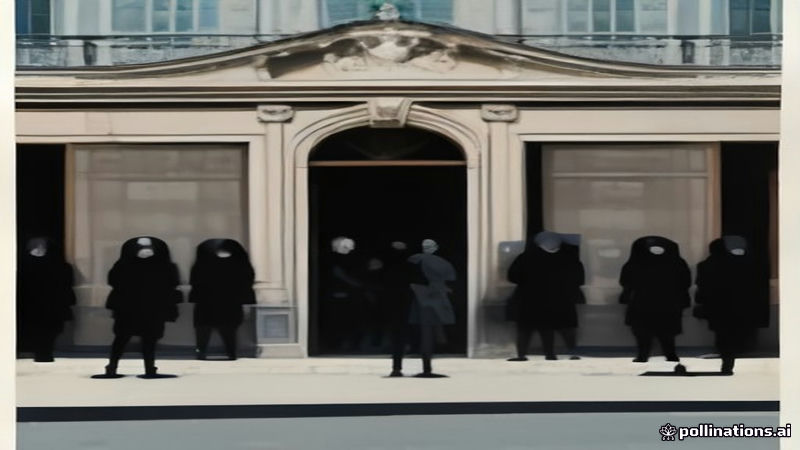

ফরাসি উচ্চ বিদ্যালয়গুলোতে ছুটির শেষে পুনরায় ছাত্র প্রতিবাদ
France 24 · 2026-11-03
AI-generated illustrationছুটির পর মঙ্গলবার শিক্ষার্থীরা শিক্ষাব্যবস্থার সংস্কার নিয়ে সরকারের ওপর চাপ বাড়াতে দেশের বহু উচ্চ বিদ্যালয় অবরোধ করেছে, ইউনিয়ন শীঘ্রই ধর্মঘটের প্রস্তুতি নিচ্ছে।
ছুটির শেষের পর মঙ্গলবার, শিক্ষার্থীরা ফ্রান্সের বহু উচ্চ বিদ্যালয়ে অবরোধ পুনরায় শুরু করে। এই পদক্ষেপগুলো শিক্ষাব্যবস্থার সংস্কার নিয়ে সরকারের ওপর চাপ বজায় রাখতে নেওয়া হয়েছে।
এই প্রতিবাদগুলো বৃহত্তর ইউনিয়ন ধর্মঘটের প্রস্তুতির সঙ্গে সামঞ্জস্যপূর্ণ, যা সপ্তাহের শেষের দিকে পরিকল্পিত। ফ্রান্স ২৪-এর ক্লেয়ার প্যাকালিন现场 থেকে রিপোর্ট করেছেন।
Read the original reporting at the links above.
English version
French high schools see renewed student blockades as holidays end
On Tuesday, as the school holiday period concluded, students across France reinstated blockades at dozens of high schools. The actions were intended to keep pressure on the government regarding proposed education reforms. The renewed demonstrations were described as smaller in scale compared with earlier actions and resumed after the school break, signaling continued unrest.
The protests come as trade unions are preparing a nationwide strike later in the week, signaling escalating tensions in the education sector. France 24's Claire Paccalin reported from the scene.